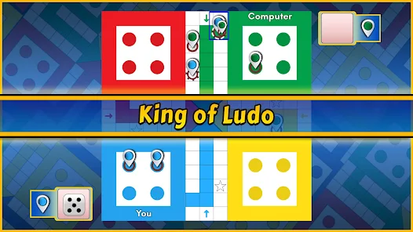
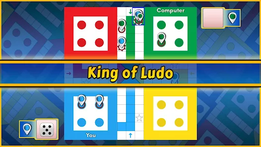

Ludo King
Ludo King is a free-to-play mobile game application developed by Gametion Technologies
Pvt Ltd, a game studio based in Navi Mumbai, India. Gametion is owned by Vikash
Jaiswal. The game is developed on the Unity game engine and is available on Android,
iOS, Kindle, Windows Phone and Microsoft Windows platforms. The game is a modernization
of the board game Ludo, which is based on the ancient Indian game of Pachisi.
Ludo King was released on February 20, 2016, on the Apple App Store, and since then it
has consistently ranked No. 1 in the Top Free Games Section of both the Apple App Store
and the Google Play Store. It is the first Indian gaming app to pass 500 million downloads.
Ludo King is played in 30 countries and available in 15 languages.
Offical Site>
Game Play:-
 

The objective of the game is to move 4 tokens from the starting point around the board to the
center of the board, also known as home. The first person to do this wins the game.
Ludo King has four modes: vs Computer, Local Mode (i.e. pass and play), Online Multiplayer
(play with other players around the world) and Private Multiplayer (play with friends in
private rooms).[15][16][17] In the vs Computer mode, the player can play offline against
the computer AI; in Local Mode, multiple players can play together offline; in Online
Multiplayer, users can play with other players online but have no choice over who their
players are; and in Private Multiplayer, a user can play with multiple players online and
can choose the other players. Here, the players can choose to play with their Facebook
friends on the online mode, and can play with up to 6 players in the local multiplayer mode.